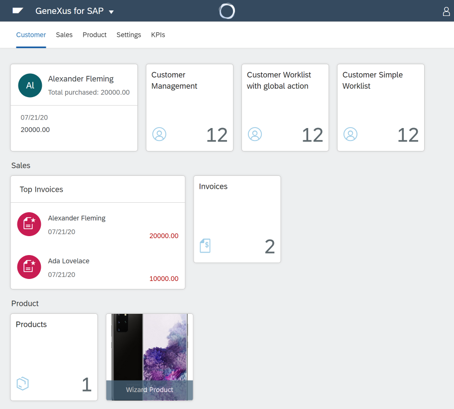

GeneXus for SAP Systems is our solution to create applications that extend and integrate with SAP systems. We offer this under two modalities, a specific version of GeneXus, known as GeneXus for SAP Systems, focused exclusively on these functionalities, or an add-on to our regular GeneXus version, known as GeneXus for SAP Systems Pack. For details of this suite, you can read the help documentation or follow this link. Below is a list of the most important improvements related to GeneXus for SAP Systems in GeneXus 17. Business Layer integrationGeneXus for SAP Systems 17 adds integration support for the ODATA API provided by SAP Business One, which opens new markets for your solutions. User Interface integrationIt also allows generating the UI using the Fiori pattern following the design rules of both Fiori 3.0 Design System and Fiori 2.0 Design System.  To get even more flexibility, the Launchpad has now more flexibility and allows arranging items in Tabs. In addition, with this version you can create UIs of CRUDs (master-detail, create - read - update - delete) based on Structured Data Type (SDT) object. Also, SAPI UI5 controls have been added, and you can extend the existing library by creating your own SAPUI5 controls in GeneXus. More information at GeneXus and SAP UI5. With all these features you can build an application with the same user experience that an SAP user is familiar with. Automatic deployment to SAP Cloud FoundryThis version adds automatic deployment to SAP Cloud Foundry environment. Follow this link to see how to do it.
|
| Backlinks | |
| Toc:GeneXus 17 | Integration and Evolution with GeneXus 17 |